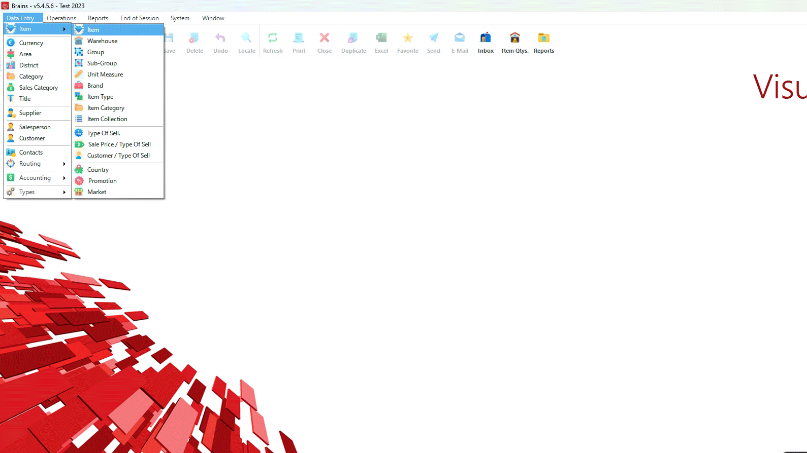
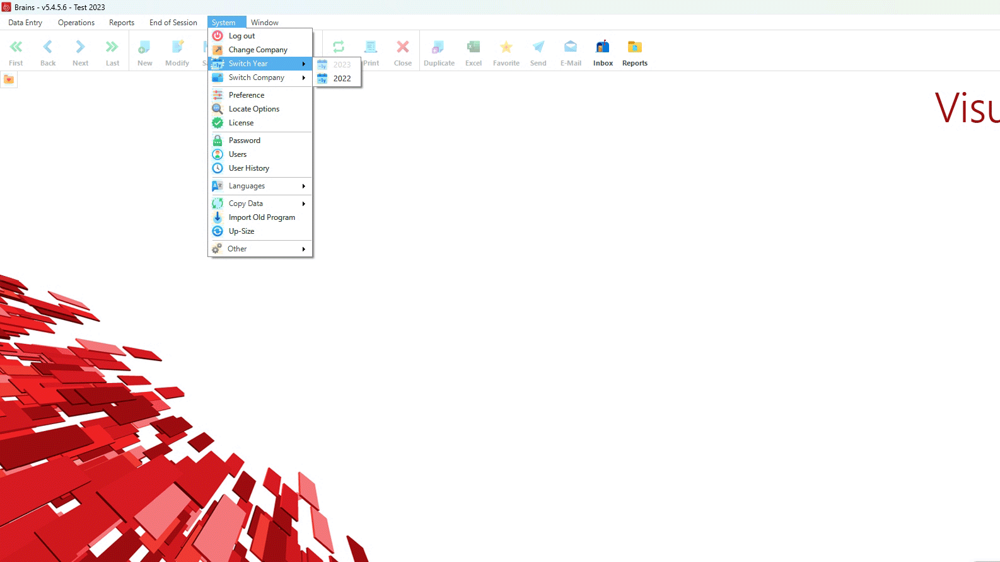

  <section>

    <div class="w3-container w3-light-grey">

      <div id="home" class="tab-content active">

        <div class="Solution">
          <h3>Required System</h3>
          <p>
            The system software is developed under Visual Studio .NET Framework Using Sql Server Database. Please note
            that the following description of the software system is based on different modules. All systems have
            certain number of features of which we may list the following:
          </p>

          <ul>
            <li>
              Management facilities in data entry screens such as creating, deleting, modifying and searching for
              entries.
            </li>

            <li>
              All screens have the feature of using the mouse or the arrows and the ability to open multiple screens at
              one time.
            </li>

            <li>
              Reports can be produced on printer and screen as well.
            </li>
          </ul>

          <p><strong>Brief Description of the Software:</strong><br>
            This section describes in brief the features of the software. </p>

          <h3>General Specifications:</h3>
          <div>
            <code>Integrated.</code><br>
            <code>Multi company.</code><br>
            <code>Multi currency.</code><br>
            <code>User friendly.</code><br>
            <code>Use of arrow keys to scroll and select options.</code><br>
            <code>Fully menu driven system.</code><br>
            <code>High level of security.</code><br>
          </div>

          <h3>Access Control:</h3>
          <ul>
            <li>Protection and restriction to the access of data and operations.</li>
            <li>Unlimited number of users.</li>
            <li>Access restriction according to user's category.</li>
            <li>Password modification is user available.</li>
          </ul>

          <h3>Stock System:</h3>
          <ul class="answer-steps">
            <li>Codification of Items according to group and sub groups.</li>
            <li>Stock management for unlimited warehouses, each in different companies.</li>
            <li>Input of stock exchange values in local or foreign currencies.</li>
            <li>Stock inventory per warehouse or consolidated.</li>
            <li>Transfer of items.</li>
            <li>Selling price depending on quantity and/or customer's class.</li>
            <li>Price lists.</li>
            <li>Stock value according to different prices.</li>
            <li>landed cost report.</li>
            <li>Daily entry values.</li>
          </ul>
          <br>
          <h3>Invoicing :</h3>
          <ul>
            <li>Multi currency invoicing.</li>
            <li>Daily sales values : global and detailed.</li>
          </ul>
          <br>

          <h3>Orders :</h3>
          <ul>
            <li>Management of supplier's and customer's purchase order.</li>
            <li>Grouping of orders.</li>
            <li>Multiple deliveries.</li>
            <li>Pending purchase orders, customerwise and itemwise.</li>
            <li>Scheduling of payments and integration into cashflow.</li>
            <li>Management of purchase fees.
          </ul>

          <br>
          <h3>Aging of Invoices :</h3>
          <ul>
            <li>Client invoices.</li>
            <li>Supplier invoices.</li>
          </ul>

          <br>

          <h3>Statistics and reports on sales :</h3>
          <p>Developped statistics :</p>
          <h4>Quantities</h4>
          <p>Sales values presented according to the combinaisons between the following parameters :</p>
          <div>
            <code>by supplier</code><br>
            <code>by client</code><br>
            <code>by item</code><br>
            <code>by group and sub-group</code><br>
            <code>by saleperson</code><br>
          </div>

        </div>

        <center><i>Continue the demo by selecting the Data Entry menu:</i></center>
      </div>

      <div id="menu1" class="tab-content">

        <h3>Data Entry</h3>

        <br><code>Watch the quick walkthrough below to see the seamless functionality and user-friendly interface of our software in action.</code><br>
        <div style="display: flex;justify-content: center;">
          
        </div>
        <div class="Solution">
          <ul class="answer-steps">
            <li><strong>ITEM Module:</strong><br>
              This module creates all item parameters such as group, subgroup, supplier, unit measure, etc...
            </li>
            <li><strong>GROUP Module :</strong><br>
              It allows the user data such as code and description related to the group section.
            </li>
            <li><strong>SUB-GROUP Module:</strong><br>
              Same as the previous module except that the data entered is related to the sub-group which is in turn
              related to specific group.
            </li>
            <li><strong>UNIT MEASURE Module:</strong><br>
              It creates the unit measurement that is used in a specific company such Kilo, Box, Meter, etc...
            </li>
            <li><strong>SUPPLIER Module :</strong><br>
              It creates a file in which all information about suppliers are stored.
            </li>
            <li><strong>Currency Module:</strong><br>
              This module allows you to input the codes of the different currencies you may deal with, their
              descriptions as well as their symbols.
            </li>
            <li><strong>AREA Module:</strong><br>
              This module creates the codes of different area.
            </li>
            <li><strong>DISTRICT Module:</strong><br>
              This module specifies the various districts located under a certain area.
            </li>
            <li><strong>CATEGORY Module :</strong><br>
              This module is used to classify the company's clients. This is used later for statistical reports.
            </li>
            <li><strong>SALES CATEGORY Module:</strong><br>
              This module creates the type of sales for every customer such as whole sale and retail.
            </li>
            <li><strong>SALESPERSONS Module:</strong><br>
              This module allows you to enter the required data about the salespersons in the company.
            </li>
            <li><strong>CUSTOMER Module:</strong><br>
              This module allows you to enter the required data about the customers of the company.
            </li>
            <li><strong>DEPARTEMENT Module:</strong><br>
              This module differentiates the goods between one warehouse and another.
            </li>
            <li><strong>ITEM TYPE Module:</strong><br>
              This module allows you to enter the type of an item such as normal, with expiry date etc...
            </li>
            <li><strong>CHARGE Module:</strong><br>
              This module allows you to enter all charges with their currencies so they could be used to calculate the
              landed cost of items.
            </li>
          </ul>
        </div>
        <h3>Demo Video:</h3>
        <div id="video-container" class="video-wrapper"><video src="../screenshots/NewItem/AddNewItem.mp4"
            controls=""></video></div>
      </div>

      <div id="menu2" class="tab-content">

        <h3>OPERATIONS Menu</h3>

        <br><code>Watch the quick walkthrough below to see the seamless functionality and user-friendly interface of our software in action.</code><br>
        <div style="display: flex;justify-content: center;">
          
        </div>
        <div class="Solution">
          <ul class="answer-steps">
            <li><strong>CURRENCY RATES Module:</strong><br>
              This module is needed to enter the currency rates that correspond to the amount of transactions. These
              rates are entered on daily basis.
            </li>
            <li><strong>ORDER Module:</strong><br>
              This module allows you to place orders on computers to be compared with the invoice issued by the
              supplier.
            </li>
            <li><strong>ENTRY Module:</strong><br>
              This module is used to enter quantity and prices, and to calculate the weighted average cost of the item
              entered.
            </li>
            <li><strong>OFFER Module:</strong><br>
              This module prints out computerized offer based on the description that the user needs.
            </li>
            <li><strong>DELIVERY NOTE Module:</strong><br>
              This module is used to reserve quantity.
            </li>
            <li><strong>INVOICE Module:</strong><br>
              This module is used to issue an invoice when goods are sold.
            </li>
            <li><strong>RETURN Module:</strong><br>
              This module is used for returned goods.
            </li>
            <li><strong>QUANTITY IN STOCK Module:</strong><br>
              This module lists on screen the remaining quantities in stock per warehouse for a specific items.
            </li>
            <li><strong>COST Module:</strong><br>
              This module displays the cost ex-factory, the last cost, the weighted average cost and beginning cost in
              L.L., $US, and the item currency for a specific item.
            </li>
            <li><strong>PAYMENTS / RECEIVALBES Module:</strong><br>
              This module prints out cash receipts paid by the customer or payment voucher paid to the supplier.
            </li>
            <li><strong>ASSEMBLING / DISASSEMBLING ITEMS Module:</strong><br>
              This module is able to group different items in one item and calculate automatically the cost of the new
              item and vice-versa.
            </li>
            <li><strong>ADJUSTMENT OF STOCK (PLUS-MINUS) Module:</strong>
              This report is used to adjust the company's stock at the end of every year between the physical stock and
              the stock on the computer.
            </li>
            <li><strong>INSTALLMENTS Module:</strong><br>
              This module is able to generate flat and non-flat rate installments and directly printed if required.
            </li>
          </ul>
        </div>
        <h3>Demo Video:</h3>
        <div id="video-container" class="video-wrapper"><video src="../screenshots/ClosingOpeningMainServer/ClosingMainServer.mp4"
            controls=""></video></div>
      </div>

      <div id="menu3" class="tab-content">

        <h3>REPORTS Menu</h3>

        <br><code>Watch the quick walkthrough below to see the seamless functionality and user-friendly interface of our software in action.</code><br>
        <div style="display: flex;justify-content: center;">
          
        </div>
        <div class="Solution">
          <ul class="answer-steps">
            <li><strong>QUANTITY & STOCK VALUE Module:</strong><br>
              This report lists the quantities of the stock between two given dates such as starting quantities,
              quantities in, quantities out, and balance. An additional feature is that by choosing the 'value' key, the
              output will include values of the stock.
            </li>
            <li><strong>CLIENT ITEM SALES Module:</strong><br>
              This report outputs the turnover for every client: sales value of the quantity sold, sales value of the
              quantity returned and the balance.
            </li>
            <li><strong>SALESPERSON ITEM SALES Module:</strong><br>
              This report outputs the turnover for the salespersons in your company.
            </li>
            <li><strong>TARGET SALES Module:</strong><br>
              This report lists the amount that every salesperson should sell according to a specific target on monthly
              basis that the marketing department sets for.
            </li>
            <li><strong>STOCK VALUE Module:</strong><br>
              This report prints out quantities and values of all your stock up to a given date.
            </li>
            <li><strong>SUPPLIER ITEM SALES Module:</strong><br>
              This module lists all the stock quantity values related to one or more specific suppliers.
            </li>
            <li><strong>GENERAL SALES Module:</strong><br>
              This report summarizes the stock quantity values in our report per month on yearly basis. This report can
              be produced by item, client, salesperson, group, subgroup, and by any desired combination.
            </li>
            <li><strong>AGING Module:</strong><br>
              This report is very essential to the administration . The financial situation of every client and the
              amount owed to the company.
            </li>
            <li><strong>SALESPERSON / INVOICES & RETURNS Module:</strong><br>
              This report lists for every salespersons the invoices and returns issued between two given dates along
              their amounts.
            </li>
            <li><strong>CLIENTs INVOICES & RETURNS Module:</strong><br>
              This report lists for every client the invoices and returns issued between two given dates along their
              amounts.
            </li>
            <li><strong>EXPIRING DATES Module:</strong><br>
              This report prints all existing and/or expected expiring dates of the available stock.
            </li>
            <li><strong>AUTOMATIC GENERATING SALES PRICES Module:</strong><br>
              This program generates automatically the sales prices of certain commodities based on a given percentage
              number which could be a positive or a negative number. This can be applied on the last cost or weighted
              average cost.
            </li>
            <li><strong>TOTAL SALES CLIENTS Module:</strong><br>
              This report prints a summary of the total amount of sales per client between two given dates.
            </li>
            <li><strong>TOTAL SALES BY SALESPERSONS Module:</strong><br>
              This report prints a summary of the total amount of sales per salesperson between two given dates.
            </li>
          </ul>
        </div>
      </div>

      <div id="menu4" class="tab-content">

        <h3>END OF SESSION Menu</h3>
   
        <br><code>Watch the quick walkthrough below to see the seamless functionality and user-friendly interface of our software in action.</code><br>
        <div style="display: flex;justify-content: center;">
          
        </div>
        <div class="Solution">
          <ul class="answer-steps">
            <li>
              <strong>BACKUP Feature:</strong><br>
              It is very important to store data on tapes for later use in case of probable damage. You can run this
              command directly from the system without quitting.
            </li>
            <li>
              <strong>Quit:</strong><br>
              To close Brains system
            </li>
          </ul>
        </div>
      </div>

      <div id="menu5" class="tab-content">

        <h3>SYSTEM Menu</h3>

        <br><code>Watch the quick walkthrough below to see the seamless functionality and user-friendly interface of our software in action.</code><br>
        <div style="display: flex;justify-content: center;">
          
        </div>
        <div class="Solution">
          <ul class="answer-steps">
            <li>
              <strong>CHANGE COMPANY Module:</strong><br>
              By using this module, you can shift from one company to another. <br>
              This applies on a company that has under its wings many other companies. All corresponding files will be
              open to the new entering data.
            </li>

            <li>
              <strong>Other Features:</strong><br>
              The stock system provides you with the following additional features:
              <div>
                <code>You may change the system password by using password option.</code><br>
                <code>You may choose to list auxiliary accounts by code or by description.</code><br>
                <code>You may run your system in English, Arabic, French or Portuguese.</code><br>
                <code>You may number the pages of the daily journal before sending them to the government for stamping.</code><br>
                <code>You may use calculator and calendar directly from the program without quitting.</code>
              </div>
            </li>
          </ul>
        </div>
      </div>
    </div>
    </div>
  </section>